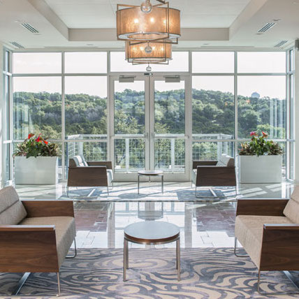
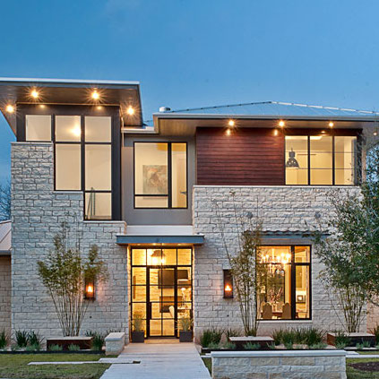
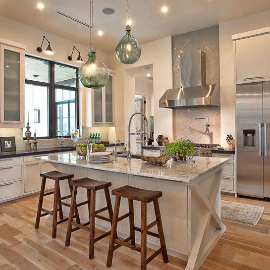

Commercial Architecture

Residential Architecture

Founded in 1989, Cornerstone Architects is a design firm based in Austin, Texas. Cornerstone specializes in architecture and interior design for both residential and commercial projects. Cornerstone's international experience includes both commercial and luxury residential projects. The firm's design approach blends architectural, interior, and sustainable design disciplines to create a uniquely balanced cutting edge architectural solution for each project.